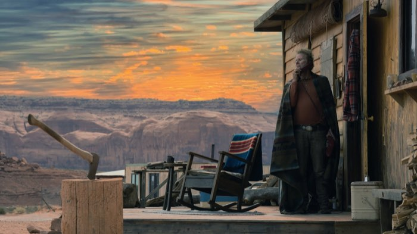
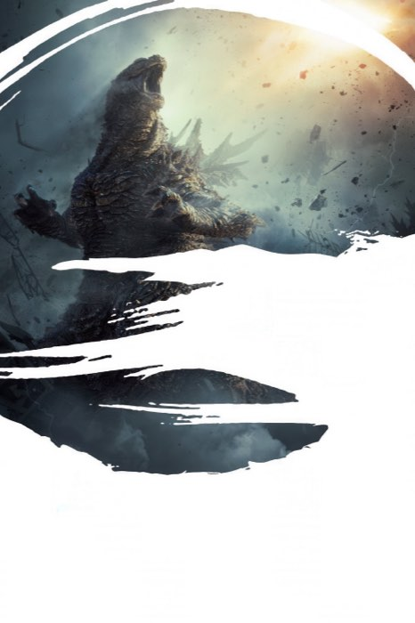
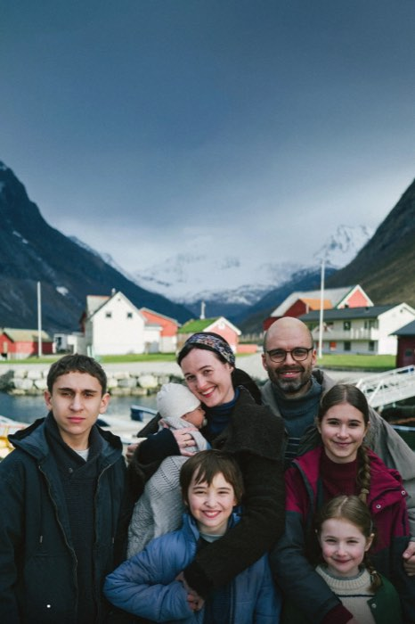
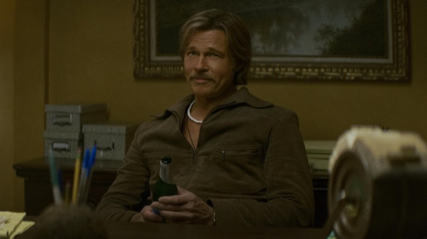
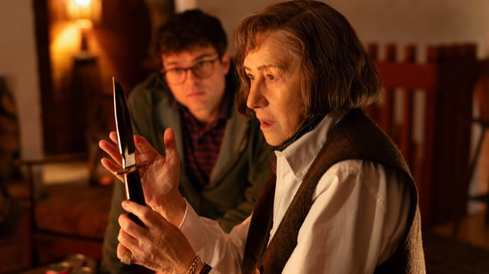
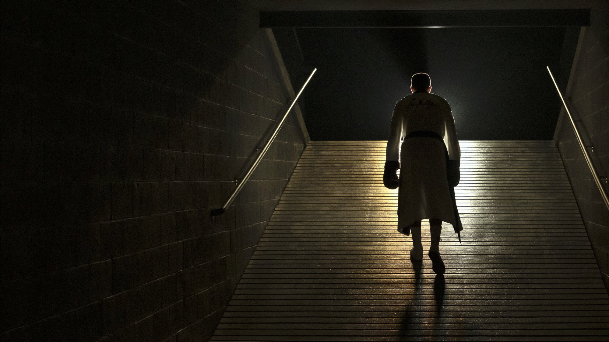
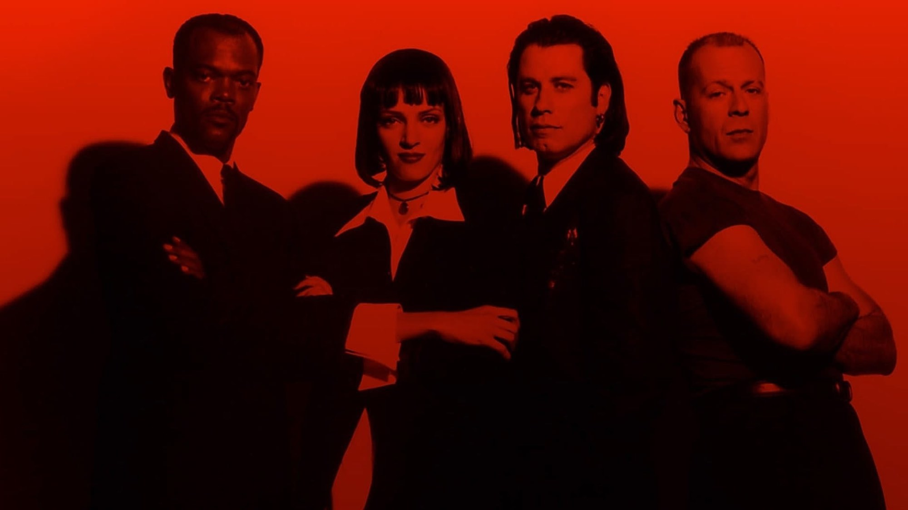

The Cinephile Journal: recensioni di film e serie TV, uscite al cinema e curiosità
Pirati dei Caraibi: 7 curiosità su Jack Sparrow
Un ruolo scritto per Hugh Jackman e un padre che è il modello stesso del figlio

Al cinema questo mese
Tutte le uscite →Hope

Wild Horse Nine
L'essere amato

Godzilla Minus Zero
Hunger Games - L'alba sulla mietitura

Fjord
Storie parallele

Le nuove disavventure di Cliff Booth

Un talento per il crimine
Blog
Tutto il blog →
Streaming nel weekend: cosa vedere dal 6 all'8 novembre
Un film d'autore di quasi tre ore, una serie di spie che torna e la prima serie autorizzata su Muhammad Ali: tre titoli per il weekend, ordinati per quanta serata vi serve
Massimo del Gladiatore è esistito? La storia vera (spoiler)
Il generale è un'invenzione, ma l'imperatore che combatte nell'arena sì: cosa c'è di vero su Commodo e su Marco Aurelio, con le fonti antiche
Al cinema dal 5 novembre: i film in uscita
Due agenti CIA sull'Isola di Pasqua, un thriller coreano di quasi tre ore e il gatto di Dr. Seuss: la settimana in sala, con il nostro giudizio d'attesa

Pulp Fiction, Ezechiele 25:17: è nella Bibbia? (spoiler)
Il versetto che Jules recita prima di sparare è quasi tutto inventato: ecco cosa dice davvero la Bibbia in italiano, da quale film di karate arriva e perché alla fine cambia significato
Seguici su Instagram
The Cinephile Journal è una rivista italiana di cinema e serie TV: pubblichiamo recensioni, le uscite al cinema e in streaming e curiosità dal set. Chi siamo
@the_cinephile_journal →